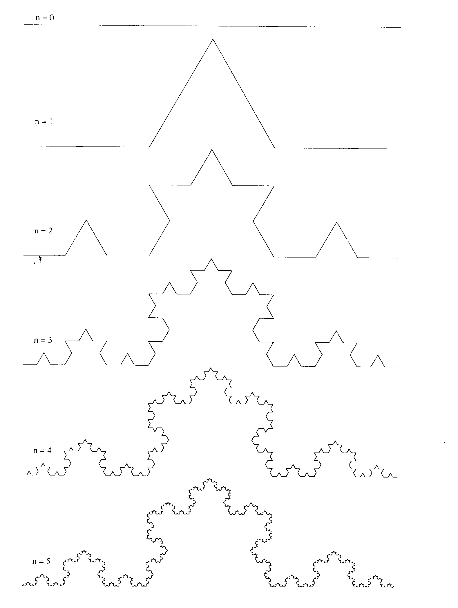
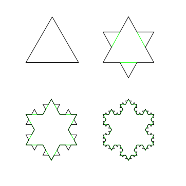
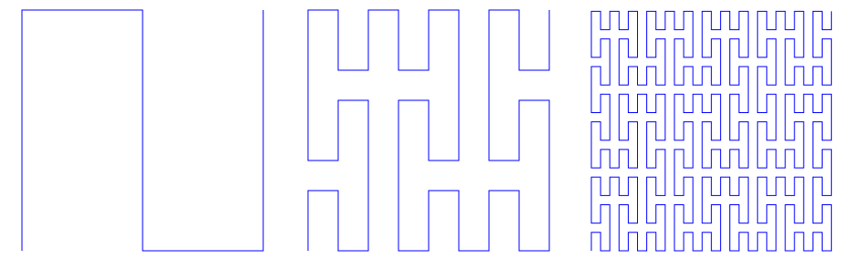
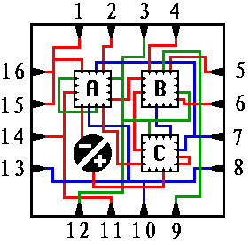
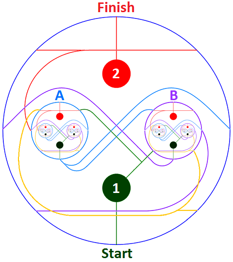
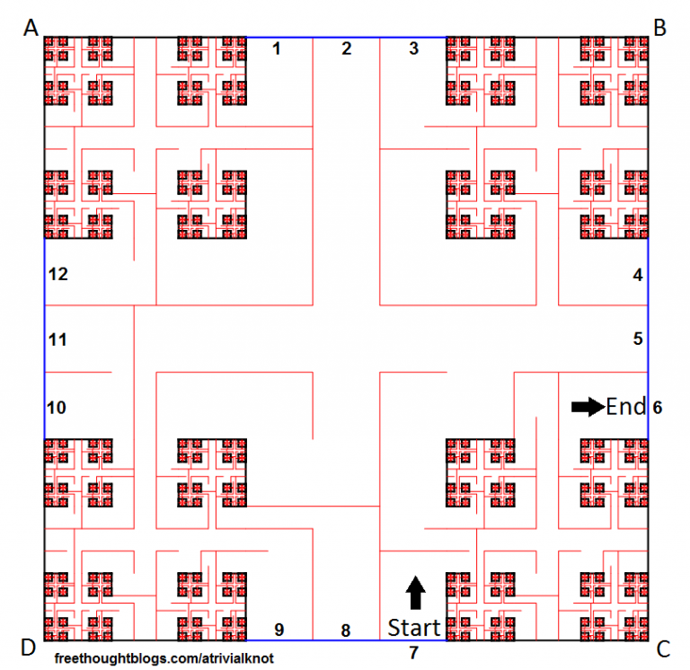
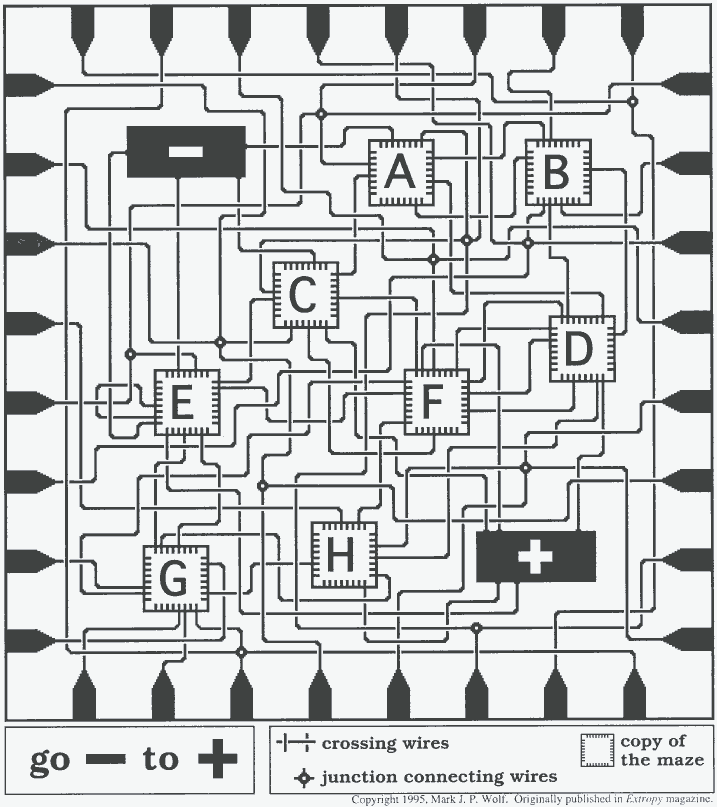

分形是一种特殊的几何图形，具有无限复杂的结构，这些结构在不同的尺度下重复出现，显示出自相似性。这意味着，无论你放大还是缩小分形的一部分，都可以看到与整体相似的结构。
构造一个分形结构
科赫曲线
- 给定一个线段。
- 将线段分成三等份。
- 以中间的线段为底，向外画一个等边三角形。
- 将中间的线段移去
- 分别对当前所有线段执行2~5。
 
将这些步骤无限地进行下去就得到了科赫曲线。科赫曲线处处连续，处处不可导，周长无限而面积有限。
皮亚诺（Peano）曲线
- 给定一个正方形。
- 将正方形分成9个相同的正方形。
- 以“N”形的折线连接9个小正方形的中点。
- 对当前所有小正方形执行2~4

皮亚诺曲线可以填满整个正方形。而在以往的认知中，线是一维，不可能填满二维的面。这使得人们重新思考维度。分形几何中，维度不一定是整数，而是分数。
希尔伯特（Hilbert）曲线
- 给定一个正方形。
- 将正方形分成4个相同的正方形。
- 以“N”形的折线连接4个小正方形的中点。
- 对当前所有小正方形执行2~4

同样希尔伯特曲线也能填满一个正方形。
自然界中的分形
蕨类植物：每片叶子和整体的结构都是相似的。
花椰菜：每个分支和整体结构相似。
云彩、山岭、海岸线、树木的形状等等。
其实，分形结构在自然界普遍存在。这种复杂结构曾经难以研究，而分形几何学是很好的手段。
迷宫
分形迷宫是一种包含自身副本的迷宫。
这种迷宫中会包含一些房间，房间内部的构造和整个迷宫一致。
大开眼界：世上最无敌的迷宫当数“分形迷宫” | Matrix67: The Aha Moments。
语言描述难以理解的话，可以看看这个视频 【辣鸡游戏#3】分形迷宫-有无数个”起点“和”终点“也很难通关！。
几个分形迷宫：

 1和2没有实际作用，从start到finish即可。


Matrix67制作的可在线游玩的分形迷宫： I Need To Go Deeper，比较简单。